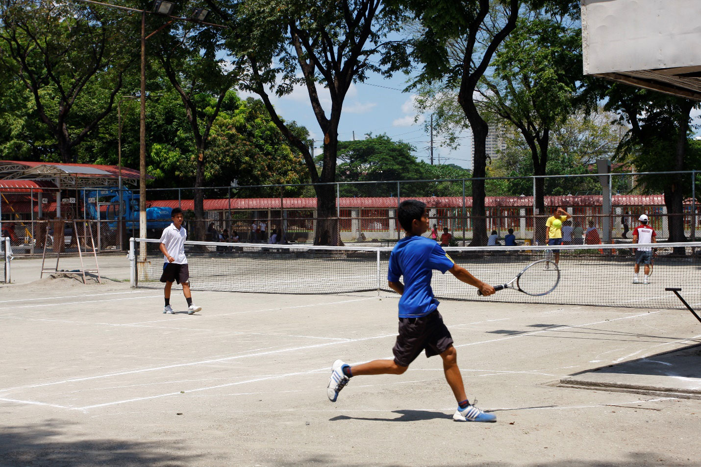

Provided space for playing tennis, a fast-paced, competitive sport that requires a specific type of surface to facilitate the game. Lawn courts, traditionally made of grass, are known for their smooth, fast play. Used for PE, and for practicing a match or just playing with friends.